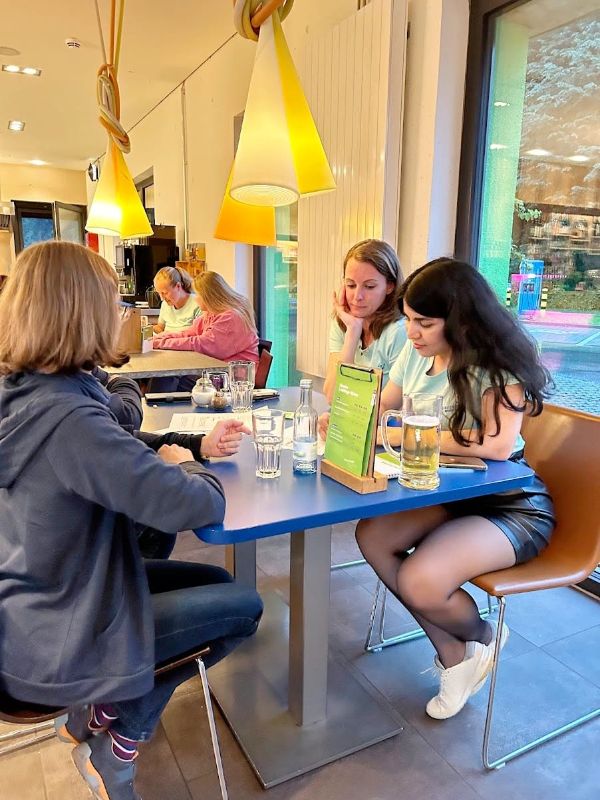

|
Fatemeh Salehi Rizi
Data Scientist
Stuttgart
|

|
|
I am a Data Scientist at TRUUCO in Karlsruhe. TRUUCO is a smart data company of the cooperative financial group. I have already worked as Data Scientist at Scieneers, Nagarro,
Scads.AI,
the University of Passau and
University of Konstanz in Germany.
My research interests are in Machine Learning, Natural Language Processing and Statistical Modelling. During my PhD at the University of Passau, I have worked on graph representation learning and subsequently solving graph analysis tasks. I finished my Bachelor and Master studies both in the field of Computer Science in the beautiful city of Isfahan.
|
|